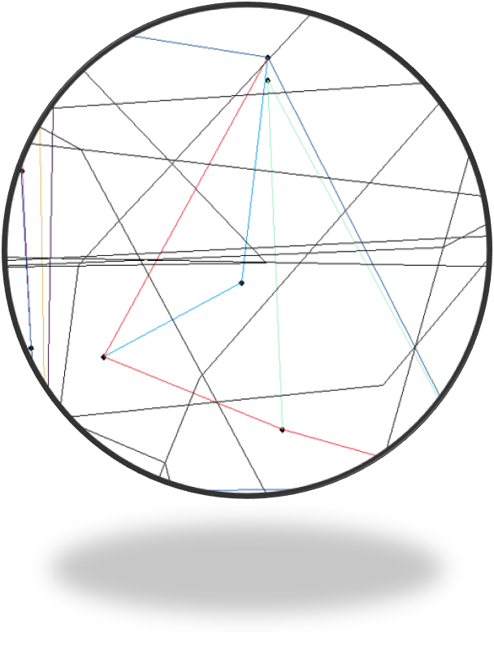

軟體測試與實驗結果
不同輸入值的實驗結果。

2個點
求出中垂線，沒有任何問題。
3個點
求出Convex Hull，1點和2點merge起來。

4個點
切成2點和2點，因為沒有消線，畫面開始混亂。

5個點
遞迴開始，未消線導致更加混亂。

6個點
同5個點。

10個點
線條打架。

12個點
未消掉的線嚴重干擾merge了。
系統資訊
Operating System: Windows 10 專業版 64-bit
Processor: Intel(R) Core(TM) i7-8700 CPU @ 3.20GHz
Memory: 16384MB RAM
System Manufacturer: Gigabyte Technology Co., Ltd
Display Devices: Intel(R) UHD Graphics 630